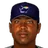
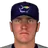
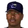

American Baseball League · Eastern Conference
Tampa Bay Rays
18-23 .439 · 7th in Eastern Conference, 6 GB
Run differential -19 (175 RS, 194 RA) · Pythagorean 19-22 · L10 4-6 · Streak W1 · Home 10-10 · Road 8-13
Tropicana Field (capacity 45,000)
High Minors:  Clearwater Threshers · Low Minors:
Clearwater Threshers · Low Minors:  Jupiter Hammerheads
Jupiter Hammerheads
Depth chart & lineupsPayrollTransactionsLeague financesStaffBallparkRecord bookThe season so far
Season So Far games over .500 by date
Recent Results
Farm System automatic farm score
3rd of 20 in the ABL with a farm score of 12.5 (57 players 25 or younger with stats at the affiliates). All farm systems →
Roster (26)
| # | Player | Pos | B/T | Age |
|---|---|---|---|---|
| 45 | Dewon Brazelton | SP | R/R | 21 |
| 41 | Dave Bush | SP | R/R | 22 |
| 27 | Josh Fogg | SP | R/R | 25 |
| 15 | Ben Sheets | SP | R/R | 23 |
| 50 |  Jerome Williams | SP | R/R | 20 |
| 66 | Grant Balfour | RP | R/R | 24 |
| 12 |  Kevin Beirne | RP | L/R | 28 |
| 58 | Joey Eischen | RP | L/L | 31 |
| 4 | Seth Etherton | RP | R/R | 25 |
| 59 |  Jorge Sosa | RP | R/R | 24 |
| 8 | Scott Winchester | RP | R/R | 29 |
| 63 | Rafael Betancourt | CL | R/R | 27 |
| 21 | John Buck | C | R/R | 21 |
| 20 | C | R/R | 30 | |
| 86 | 1B | R/R | 22 | |
| 96 | Hanley Ramirez | 1B | R/R | 18 |
| 39 | 2B | S/R | 22 | |
| 43 | Luis Sojo | 2B | R/R | 37 |
| 79 | 3B | L/R | 24 | |
| 52 | Chase Utley | 3B | L/R | 23 |
| 28 | SS | R/R | 24 | |
| 81 | Danny Sandoval | SS | S/R | 23 |
| 9 | LF | L/L | 24 | |
| 88 | Alex Sanchez | CF | L/L | 25 |
| 11 | RF | L/L | 21 | |
| 26 | J.J. Davis | RF | R/R | 23 |
2002 Batting
| Player | G | PA | AB | R | H | 2B | 3B | HR | RBI | BB | K | SB | AVG | OBP | SLG | OPS |
|---|---|---|---|---|---|---|---|---|---|---|---|---|---|---|---|---|
| Garrett Atkins | 40 | 178 | 156 | 19 | 38 | 8 | 0 | 2 | 10 | 21 | 27 | 1 | .244 | .337 | .333 | .670 |
| Alex Sanchez | 41 | 175 | 163 | 25 | 39 | 4 | 0 | 0 | 11 | 12 | 28 | 12 | .239 | .291 | .264 | .555 |
| Juan Pierre | 39 | 169 | 153 | 23 | 54 | 6 | 1 | 0 | 14 | 15 | 12 | 12 | .353 | .408 | .405 | .814 |
| Ramon Santiago | 38 | 161 | 140 | 13 | 33 | 9 | 0 | 1 | 16 | 10 | 21 | 4 | .236 | .297 | .321 | .618 |
| J.J. Davis | 36 | 158 | 139 | 19 | 35 | 4 | 0 | 9 | 31 | 15 | 28 | 6 | .252 | .329 | .475 | .804 |
| Chase Utley | 36 | 157 | 140 | 18 | 40 | 6 | 0 | 6 | 22 | 16 | 28 | 5 | .286 | .363 | .457 | .820 |
| Chad Hermansen | 38 | 146 | 140 | 14 | 35 | 8 | 0 | 4 | 18 | 5 | 35 | 5 | .250 | .274 | .393 | .667 |
| John Buck | 33 | 135 | 122 | 15 | 31 | 8 | 0 | 5 | 15 | 10 | 32 | 1 | .254 | .313 | .443 | .756 |
| Hanley Ramirez | 34 | 123 | 109 | 15 | 22 | 1 | 2 | 1 | 10 | 13 | 25 | 4 | .202 | .285 | .275 | .560 |
| Luis Sojo | 19 | 76 | 73 | 7 | 22 | 1 | 1 | 3 | 11 | 3 | 7 | 3 | .301 | .329 | .466 | .795 |
| Juan Robles | 8 | 31 | 30 | 3 | 8 | 0 | 1 | 1 | 2 | 0 | 4 | 0 | .267 | .290 | .433 | .724 |
| Carlos Avila | 10 | 29 | 28 | 1 | 6 | 0 | 0 | 0 | 2 | 1 | 6 | 0 | .214 | .241 | .214 | .456 |
| Ramon A. Castro | 4 | 16 | 12 | 1 | 3 | 0 | 0 | 0 | 1 | 3 | 3 | 0 | .250 | .400 | .250 | .650 |
| Danny Sandoval | 8 | 13 | 11 | 1 | 3 | 0 | 0 | 0 | 0 | 1 | 2 | 1 | .273 | .333 | .273 | .606 |
| Ivanon Coffie | 10 | 11 | 10 | 1 | 2 | 1 | 0 | 0 | 1 | 0 | 1 | 0 | .200 | .182 | .300 | .482 |
| Seth Taylor | 2 | 1 | 1 | 0 | 0 | 0 | 0 | 0 | 0 | 0 | 0 | 0 | .000 | .000 | .000 | .000 |
| Team | 41 | 1579 | 1427 | 175 | 371 | 56 | 5 | 32 | 164 | 125 | 259 | 54 | .260 | .322 | .374 | .695 |
2002 Batting, Advanced
| Player | PA | AVG | OBP | SLG | OPS+ | ISO | BABIP | BB% | K% | WPA | UBR | WAR |
|---|---|---|---|---|---|---|---|---|---|---|---|---|
| Garrett Atkins | 178 | .244 | .337 | .333 | 67 | .090 | .283 | 11.8% | 15.2% | -0.74 | -1.8 | -0.5 |
| Alex Sanchez | 175 | .239 | .291 | .264 | 39 | .025 | .289 | 6.9% | 16.0% | 0.14 | 1.2 | -0.2 |
| Juan Pierre | 169 | .353 | .408 | .405 | 103 | .052 | .380 | 8.9% | 7.1% | 0.33 | 0.4 | 1.0 |
| Ramon Santiago | 161 | .236 | .297 | .321 | 54 | .086 | .267 | 6.2% | 13.0% | -0.36 | -0.1 | 0.1 |
| J.J. Davis | 158 | .252 | .329 | .475 | 97 | .223 | .250 | 9.5% | 17.7% | 0.60 | -1.6 | 0.3 |
| Chase Utley | 157 | .286 | .363 | .457 | 102 | .171 | .321 | 10.2% | 17.8% | -0.38 | -1.5 | -0.1 |
| Chad Hermansen | 146 | .250 | .274 | .393 | 63 | .143 | .304 | 3.4% | 24.0% | 0.30 | -1.5 | -0.2 |
| John Buck | 135 | .254 | .313 | .443 | 85 | .189 | .302 | 7.4% | 23.7% | 0.08 | 0.3 | 0.1 |
| Hanley Ramirez | 123 | .202 | .285 | .275 | 40 | .073 | .250 | 10.6% | 20.3% | -0.59 | -0.6 | -0.7 |
| Luis Sojo | 76 | .301 | .329 | .466 | 95 | .164 | .302 | 3.9% | 9.2% | 0.82 | -1.0 | 0.1 |
| Juan Robles | 31 | .267 | .290 | .433 | 77 | .167 | .280 | 0.0% | 12.9% | -0.09 | -0.1 | 0.0 |
| Carlos Avila | 29 | .214 | .241 | .214 | 15 | .000 | .273 | 3.4% | 20.7% | -0.16 | -0.1 | -0.3 |
| Ramon A. Castro | 16 | .250 | .400 | .250 | 67 | .000 | .333 | 18.8% | 18.8% | -0.13 | 0.3 | 0.1 |
| Danny Sandoval | 13 | .273 | .333 | .273 | 53 | .000 | .333 | 7.7% | 15.4% | -0.17 | 0.0 | 0.0 |
| Ivanon Coffie | 11 | .200 | .182 | .300 | 17 | .100 | .200 | 0.0% | 9.1% | 0.08 | 0.0 | -0.1 |
| Seth Taylor | 1 | .000 | .000 | .000 | -100 | .000 | .000 | 0.0% | 0.0% | 0.00 | 0.0 | 0.0 |
| Team | 1579 | .260 | .322 | .374 | 72 | .114 | .296 | 7.9% | 16.4% | -0.25 | -6.2 | -0.4 |
2002 Pitching
| Pitcher | G | GS | W | L | SV | IP | H | R | ER | BB | K | HR | ERA | WHIP |
|---|---|---|---|---|---|---|---|---|---|---|---|---|---|---|
| Ben Sheets | 9 | 9 | 3 | 4 | 0 | 61.0 | 66 | 26 | 25 | 18 | 55 | 2 | 3.69 | 1.38 |
| Dave Bush | 9 | 9 | 3 | 3 | 0 | 57.0 | 56 | 28 | 25 | 10 | 44 | 4 | 3.95 | 1.16 |
| Jerome Williams | 8 | 8 | 3 | 4 | 0 | 50.1 | 53 | 21 | 20 | 17 | 35 | 8 | 3.58 | 1.39 |
| Josh Fogg | 8 | 8 | 1 | 3 | 0 | 41.0 | 56 | 31 | 31 | 16 | 32 | 7 | 6.80 | 1.76 |
| Dewon Brazelton | 7 | 7 | 2 | 4 | 0 | 32.2 | 45 | 23 | 23 | 15 | 21 | 4 | 6.34 | 1.84 |
| Seth Etherton | 15 | 0 | 1 | 2 | 2 | 28.0 | 30 | 10 | 10 | 11 | 16 | 4 | 3.21 | 1.46 |
| Joey Eischen | 13 | 0 | 2 | 0 | 1 | 19.2 | 19 | 6 | 5 | 14 | 15 | 1 | 2.29 | 1.68 |
| Grant Balfour | 16 | 0 | 1 | 0 | 3 | 16.1 | 15 | 6 | 6 | 8 | 22 | 4 | 3.31 | 1.41 |
| Jorge Sosa | 8 | 0 | 0 | 0 | 0 | 14.1 | 23 | 11 | 11 | 2 | 7 | 2 | 6.91 | 1.74 |
| Scott Winchester | 7 | 0 | 0 | 0 | 0 | 14.0 | 11 | 6 | 6 | 4 | 9 | 0 | 3.86 | 1.07 |
| Kevin Beirne | 10 | 0 | 1 | 1 | 0 | 12.2 | 29 | 21 | 21 | 10 | 7 | 2 | 14.92 | 3.08 |
| Rafael Betancourt | 10 | 0 | 1 | 2 | 6 | 11.2 | 6 | 3 | 3 | 1 | 16 | 2 | 2.31 | 0.60 |
| Joel Peralta | 2 | 0 | 0 | 0 | 0 | 4.0 | 4 | 2 | 2 | 5 | 3 | 1 | 4.50 | 2.25 |
| Team | 41 | 41 | 18 | 23 | 12 | 362.2 | 413 | 194 | 188 | 131 | 282 | 41 | 4.67 | 1.50 |
2002 Pitching, Advanced
| Pitcher | IP | ERA | WHIP | K/9 | BB/9 | HR/9 | K% | BB% | K-BB% | FIP | ERA+ | GB% | WPA | WAR |
|---|---|---|---|---|---|---|---|---|---|---|---|---|---|---|
| Ben Sheets | 61.0 | 3.69 | 1.38 | 8.1 | 2.7 | 0.3 | 21.2% | 6.9% | 14.3% | 3.34 | 139 | 57.0% | 0.12 | 2.1 |
| Dave Bush | 57.0 | 3.95 | 1.16 | 6.9 | 1.6 | 0.6 | 18.9% | 4.3% | 14.6% | 3.63 | 130 | 52.5% | -0.26 | 1.7 |
| Jerome Williams | 50.1 | 3.58 | 1.39 | 6.3 | 3.0 | 1.4 | 15.9% | 7.7% | 8.2% | 5.67 | 144 | 55.1% | 0.23 | 0.3 |
| Josh Fogg | 41.0 | 6.80 | 1.76 | 7.0 | 3.5 | 1.5 | 16.2% | 8.1% | 8.1% | 5.88 | 75 | 44.2% | -1.03 | 0.2 |
| Dewon Brazelton | 32.2 | 6.34 | 1.84 | 5.8 | 4.1 | 1.1 | 13.5% | 9.6% | 3.8% | 5.55 | 81 | 54.9% | -0.51 | 0.3 |
| Seth Etherton | 28.0 | 3.21 | 1.46 | 5.1 | 3.5 | 1.3 | 12.6% | 8.7% | 3.9% | 5.69 | 160 | 43.3% | -0.59 | -0.1 |
| Joey Eischen | 19.2 | 2.29 | 1.68 | 6.9 | 6.4 | 0.5 | 17.2% | 16.1% | 1.1% | 4.96 | 224 | 51.3% | -0.11 | 0.3 |
| Grant Balfour | 16.1 | 3.31 | 1.41 | 12.1 | 4.4 | 2.2 | 31.4% | 11.4% | 20.0% | 5.65 | 155 | 44.0% | -0.26 | -0.1 |
| Jorge Sosa | 14.1 | 6.91 | 1.74 | 4.4 | 1.3 | 1.3 | 10.4% | 3.0% | 7.5% | 4.94 | 74 | 57.1% | -0.04 | 0.1 |
| Scott Winchester | 14.0 | 3.86 | 1.07 | 5.8 | 2.6 | 0.0 | 14.5% | 6.5% | 8.1% | 3.47 | 133 | 39.4% | 0.32 | 0.3 |
| Kevin Beirne | 12.2 | 14.92 | 3.08 | 5.0 | 7.1 | 1.4 | 9.1% | 13.0% | -3.9% | 7.24 | 34 | 33.3% | -1.16 | -0.3 |
| Rafael Betancourt | 11.2 | 2.31 | 0.60 | 12.3 | 0.8 | 1.5 | 37.2% | 2.3% | 34.9% | 3.69 | 222 | 42.1% | 0.34 | 0.4 |
| Joel Peralta | 4.0 | 4.50 | 2.25 | 6.8 | 11.2 | 2.2 | 14.3% | 23.8% | -9.5% | 9.19 | 114 | 22.2% | 0.00 | -0.2 |
| Team | 362.2 | 4.67 | 1.50 | 7.0 | 3.3 | 1.0 | 17.4% | 8.1% | 9.3% | 4.85 | 110 | 49.9% | -2.95 | 5.1 |
2002 Fielding
| Player | Pos | G | GS | Inn | TC | PO | A | E | DP | FPct | ZR | Arm | Framing |
|---|---|---|---|---|---|---|---|---|---|---|---|---|---|
| Rolando Arrojo | P | 32 | 32 | 202.0 | 61 | 17 | 40 | 4 | 5 | .934 | 0.0 | - | - |
| Tanyon Sturtze | P | 39 | 27 | 195.1 | 33 | 12 | 21 | 0 | 2 | 1.000 | 0.0 | - | - |
| Tony Saunders | P | 31 | 31 | 192.1 | 31 | 12 | 18 | 1 | 4 | .968 | 0.0 | - | - |
| Albie Lopez | P | 45 | 24 | 185.1 | 32 | 12 | 17 | 3 | 2 | .906 | 0.0 | - | - |
| Bobby Witt | P | 32 | 32 | 180.1 | 42 | 12 | 27 | 3 | 4 | .929 | 0.0 | - | - |
| Bryan Rekar | P | 30 | 27 | 173.1 | 33 | 11 | 21 | 1 | 2 | .970 | 0.0 | - | - |
| Wilson Alvarez | P | 28 | 28 | 160.0 | 29 | 2 | 24 | 3 | 1 | .897 | 0.0 | - | - |
| Paul Wilson | P | 37 | 24 | 151.1 | 18 | 4 | 13 | 1 | 2 | .944 | 0.0 | - | - |
| Ryan Rupe | P | 28 | 26 | 143.1 | 19 | 5 | 12 | 2 | 0 | .895 | 0.0 | - | - |
| Ryan Rupe | P | 24 | 24 | 142.1 | 20 | 5 | 12 | 3 | 5 | .850 | 0.0 | - | - |
| Wilson Alvarez | P | 25 | 25 | 142.2 | 11 | 5 | 6 | 0 | 1 | 1.000 | 0.0 | - | - |
| Rolando Arrojo | P | 24 | 24 | 140.2 | 32 | 13 | 19 | 0 | 3 | 1.000 | 0.0 | - | - |
| Bryan Rekar | P | 25 | 25 | 140.2 | 36 | 18 | 16 | 2 | 2 | .944 | 0.0 | - | - |
| Julio Santana | P | 32 | 19 | 140.1 | 18 | 5 | 11 | 2 | 0 | .889 | 0.0 | - | - |
| Steve Trachsel | P | 23 | 23 | 137.2 | 30 | 12 | 18 | 0 | 4 | 1.000 | 0.0 | - | - |
| Esteban Yan | P | 43 | 20 | 137.2 | 21 | 11 | 8 | 2 | 1 | .905 | 0.0 | - | - |
| Albie Lopez | P | 20 | 20 | 124.2 | 25 | 6 | 18 | 1 | 1 | .960 | 0.0 | - | - |
| Joe Kennedy | P | 20 | 20 | 117.2 | 22 | 8 | 14 | 0 | 2 | 1.000 | 0.0 | - | - |
| Dennis Springer | P | 29 | 17 | 115.2 | 18 | 7 | 11 | 0 | 2 | 1.000 | 0.0 | - | - |
| Rick White | P | 63 | 1 | 108.0 | 24 | 6 | 16 | 2 | 1 | .917 | 0.0 | - | - |
| Cory Lidle | P | 31 | 11 | 96.2 | 26 | 6 | 19 | 1 | 1 | .962 | 0.0 | - | - |
| Bryan Rekar | P | 27 | 12 | 94.2 | 20 | 6 | 13 | 1 | 2 | .950 | 0.0 | - | - |
| Ryan Rupe | P | 18 | 18 | 91.0 | 13 | 2 | 11 | 0 | 0 | 1.000 | 0.0 | - | - |
| Esteban Yan | P | 64 | 0 | 88.2 | 21 | 9 | 11 | 1 | 1 | .952 | 0.0 | - | - |
| Bryan Rekar | P | 16 | 15 | 86.2 | 21 | 12 | 7 | 2 | 0 | .905 | 0.0 | - | - |
| Jim Mecir | P | 68 | 0 | 84.0 | 25 | 9 | 16 | 0 | 2 | 1.000 | 0.0 | - | - |
| Dave Eiland | P | 21 | 15 | 80.1 | 20 | 5 | 15 | 0 | 1 | 1.000 | 0.0 | - | - |
| Albie Lopez | P | 54 | 0 | 79.2 | 19 | 3 | 16 | 0 | 0 | 1.000 | 0.0 | - | - |
| Roberto Hernandez | P | 72 | 0 | 73.1 | 15 | 4 | 10 | 1 | 1 | .933 | 0.0 | - | - |
| Roberto Hernandez | P | 68 | 0 | 73.1 | 16 | 4 | 11 | 1 | 1 | .938 | 0.0 | - | - |
| Roberto Hernandez | P | 67 | 0 | 71.1 | 14 | 4 | 9 | 1 | 0 | .929 | 0.0 | - | - |
| Rick White | P | 44 | 0 | 71.1 | 8 | 1 | 7 | 0 | 1 | 1.000 | 0.0 | - | - |
| Rick White | P | 38 | 3 | 68.2 | 18 | 5 | 11 | 2 | 1 | .889 | 0.0 | - | - |
| Albie Lopez | P | 51 | 0 | 64.0 | 11 | 3 | 7 | 1 | 1 | .909 | 0.0 | - | - |
| Travis Phelps | P | 49 | 0 | 62.0 | 17 | 5 | 11 | 1 | 1 | .941 | 0.0 | - | - |
| Esteban Yan | P | 54 | 0 | 62.1 | 15 | 9 | 6 | 0 | 0 | 1.000 | 0.0 | - | - |
| Doug Creek | P | 66 | 0 | 62.2 | 10 | 2 | 5 | 3 | 1 | .700 | 0.0 | - | - |
| Nick Bierbrodt | P | 11 | 11 | 61.1 | 7 | 1 | 6 | 0 | 0 | 1.000 | 0.0 | - | - |
| Esteban Yan | P | 50 | 1 | 61.0 | 17 | 8 | 9 | 0 | 2 | 1.000 | 0.0 | - | - |
| Ben Sheets | P | 9 | 9 | 61.0 | 3 | 1 | 2 | 0 | 0 | 1.000 | -0.2 | - | - |
| Jason Johnson | P | 13 | 13 | 60.0 | 6 | 2 | 4 | 0 | 0 | 1.000 | 0.0 | - | - |
| Doug Creek | P | 45 | 0 | 60.2 | 11 | 2 | 9 | 0 | 1 | 1.000 | 0.0 | - | - |
| Dave Bush | P | 9 | 9 | 57.0 | 9 | 4 | 5 | 0 | 0 | 1.000 | -0.1 | - | - |
| Julio Santana | P | 22 | 5 | 55.1 | 9 | 3 | 5 | 1 | 1 | .889 | 0.0 | - | - |
| Dave Eiland | P | 17 | 10 | 54.2 | 21 | 6 | 15 | 0 | 0 | 1.000 | 0.0 | - | - |
| Tanyon Sturtze | P | 19 | 5 | 52.2 | 9 | 6 | 3 | 0 | 0 | 1.000 | 0.0 | - | - |
| Paul Wilson | P | 11 | 7 | 51.0 | 7 | 3 | 4 | 0 | 1 | 1.000 | 0.0 | - | - |
| Victor Zambrano | P | 36 | 0 | 51.1 | 13 | 8 | 5 | 0 | 0 | 1.000 | 0.0 | - | - |
| Norm Charlton | P | 42 | 0 | 50.2 | 9 | 2 | 6 | 1 | 0 | .889 | 0.0 | - | - |
| Jeff Wallace | P | 29 | 1 | 50.1 | 8 | 0 | 8 | 0 | 0 | 1.000 | 0.0 | - | - |
| Jerome Williams | P | 8 | 8 | 50.1 | 10 | 4 | 5 | 1 | 0 | .900 | 0.3 | - | - |
| Jim Mecir | P | 38 | 0 | 49.2 | 5 | 1 | 4 | 0 | 1 | 1.000 | 0.0 | - | - |
| Jesus Colome | P | 30 | 0 | 48.2 | 6 | 4 | 1 | 1 | 0 | .833 | 0.0 | - | - |
| Tony Saunders | P | 9 | 9 | 42.0 | 10 | 4 | 5 | 1 | 0 | .900 | 0.0 | - | - |
| Josh Fogg | P | 8 | 8 | 41.0 | 8 | 4 | 3 | 1 | 0 | .875 | 0.0 | - | - |
| Mike Duvall | P | 40 | 0 | 40.0 | 10 | 5 | 4 | 1 | 2 | .900 | 0.0 | - | - |
| Dwight Gooden | P | 8 | 8 | 36.2 | 3 | 0 | 2 | 1 | 0 | .667 | 0.0 | - | - |
| Rusty Meacham | P | 24 | 0 | 35.1 | 8 | 1 | 7 | 0 | 0 | 1.000 | 0.0 | - | - |
| Travis Harper | P | 6 | 5 | 32.0 | 4 | 1 | 3 | 0 | 0 | 1.000 | 0.0 | - | - |
| Dewon Brazelton | P | 7 | 7 | 32.2 | 5 | 2 | 3 | 0 | 0 | 1.000 | -0.3 | - | - |
| Mark Guthrie | P | 34 | 0 | 32.0 | 7 | 1 | 6 | 0 | 0 | 1.000 | 0.0 | - | - |
| Scott Aldred | P | 48 | 0 | 31.1 | 10 | 3 | 7 | 0 | 2 | 1.000 | 0.0 | - | - |
| Dan Wheeler | P | 6 | 6 | 30.2 | 3 | 1 | 2 | 0 | 0 | 1.000 | 0.0 | - | - |
| Seth Etherton | P | 15 | 0 | 28.0 | 3 | 1 | 1 | 1 | 0 | .667 | -1.2 | - | - |
| Scott Aldred | P | 37 | 0 | 24.1 | 2 | 0 | 2 | 0 | 0 | 1.000 | 0.0 | - | - |
| Dan Wheeler | P | 11 | 2 | 23.0 | 5 | 1 | 4 | 0 | 1 | 1.000 | 0.0 | - | - |
| Jim Mecir | P | 17 | 0 | 20.2 | 5 | 1 | 4 | 0 | 0 | 1.000 | 0.0 | - | - |
| Mike Judd | P | 8 | 2 | 20.0 | 1 | 1 | 0 | 0 | 0 | 1.000 | 0.0 | - | - |
| Brian Rose | P | 7 | 3 | 20.1 | 5 | 0 | 5 | 0 | 0 | 1.000 | 0.0 | - | - |
| Jeff Sparks | P | 15 | 0 | 20.1 | 1 | 1 | 0 | 0 | 0 | 1.000 | 0.0 | - | - |
| Mickey Callaway | P | 5 | 4 | 19.1 | 4 | 0 | 4 | 0 | 0 | 1.000 | 0.0 | - | - |
| Joey Eischen | P | 13 | 0 | 19.2 | 4 | 1 | 3 | 0 | 0 | 1.000 | 0.6 | - | - |
| Jason Standridge | P | 9 | 1 | 19.1 | 2 | 1 | 1 | 0 | 0 | 1.000 | 0.0 | - | - |
| Burford High Minors | P | 10 | 0 | 17.2 | 2 | 1 | 1 | 0 | 0 | 1.000 | 0.0 | - | - |
| Dan Wheeler | P | 13 | 0 | 17.2 | 6 | 3 | 3 | 0 | 1 | 1.000 | 0.0 | - | - |
| Grant Balfour | P | 16 | 0 | 16.1 | 1 | 0 | 1 | 0 | 0 | 1.000 | 0.3 | - | - |
| Rick Gorecki | P | 3 | 3 | 16.2 | 2 | 0 | 2 | 0 | 0 | 1.000 | 0.0 | - | - |
| Alan Newman | P | 18 | 0 | 15.2 | 2 | 0 | 1 | 1 | 0 | .500 | 0.0 | - | - |
| Tony Fiore | P | 11 | 0 | 15.0 | 2 | 1 | 1 | 0 | 0 | 1.000 | 0.0 | - | - |
| Scott Winchester | P | 7 | 0 | 14.0 | 4 | 2 | 1 | 1 | 0 | .750 | -0.8 | - | - |
| Jorge Sosa | P | 7 | 0 | 14.1 | 4 | 1 | 3 | 0 | 0 | 1.000 | 0.2 | - | - |
| Billy Taylor | P | 17 | 0 | 13.2 | 1 | 1 | 0 | 0 | 0 | 1.000 | 0.0 | - | - |
| Bobby Seay | P | 12 | 0 | 13.0 | 4 | 1 | 2 | 1 | 0 | .750 | 0.0 | - | - |
| Kevin Beirne | P | 10 | 0 | 12.2 | 1 | 1 | 0 | 0 | 0 | 1.000 | -0.7 | - | - |
| Ramon Tatis | P | 22 | 0 | 11.2 | 5 | 1 | 4 | 0 | 1 | 1.000 | 0.0 | - | - |
| Rafael Betancourt | P | 10 | 0 | 11.2 | 1 | 1 | 0 | 0 | 0 | 1.000 | -0.1 | - | - |
| Jim Morris | P | 16 | 0 | 10.1 | 0 | 0 | 0 | 0 | 0 | - | 0.0 | - | - |
| Terrell Wade | P | 2 | 2 | 10.2 | 0 | 0 | 0 | 0 | 0 | - | 0.0 | - | - |
| Jeff Sparks | P | 8 | 0 | 10.0 | 0 | 0 | 0 | 0 | 0 | - | 0.0 | - | - |
| Trevor Enders | P | 9 | 0 | 9.1 | 4 | 2 | 2 | 0 | 0 | 1.000 | 0.0 | - | - |
| Matt Ruebel | P | 7 | 1 | 8.2 | 1 | 1 | 0 | 0 | 0 | 1.000 | 0.0 | - | - |
| Brad Pennington | P | 1 | 0 | 8.0 | 0 | 0 | 0 | 0 | 0 | - | 0.0 | - | - |
| Eddie Gaillard | P | 8 | 0 | 8.2 | 3 | 0 | 3 | 0 | 0 | 1.000 | 0.0 | - | - |
| Travis Harper | P | 2 | 2 | 7.0 | 1 | 0 | 1 | 0 | 0 | 1.000 | 0.0 | - | - |
| Eddie Gaillard | P | 6 | 0 | 7.2 | 1 | 0 | 1 | 0 | 0 | 1.000 | 0.0 | - | - |
| Ken Hill | P | 5 | 0 | 7.1 | 5 | 2 | 2 | 1 | 0 | .800 | 0.0 | - | - |
| Mickey Callaway | P | 2 | 0 | 5.0 | 0 | 0 | 0 | 0 | 0 | - | 0.0 | - | - |
| Cory Lidle | P | 5 | 1 | 5.0 | 2 | 0 | 2 | 0 | 0 | 1.000 | 0.0 | - | - |
| Jim Morris | P | 5 | 0 | 4.2 | 0 | 0 | 0 | 0 | 0 | - | 0.0 | - | - |
| Mike Duvall | P | 3 | 0 | 4.0 | 3 | 2 | 1 | 0 | 0 | 1.000 | 0.0 | - | - |
| Joel Peralta | P | 2 | 0 | 4.0 | 0 | 0 | 0 | 0 | 0 | - | -0.2 | - | - |
| Ariel Prieto | P | 3 | 0 | 3.2 | 1 | 1 | 0 | 0 | 0 | 1.000 | 0.0 | - | - |
| Tony Fiore | P | 3 | 0 | 3.1 | 1 | 1 | 0 | 0 | 0 | 1.000 | 0.0 | - | - |
| Dave Eiland | P | 1 | 1 | 2.2 | 0 | 0 | 0 | 0 | 0 | - | 0.0 | - | - |
| Mike Duvall | P | 2 | 0 | 2.1 | 1 | 0 | 1 | 0 | 0 | 1.000 | 0.0 | - | - |
| Wade Boggs | P | 1 | 0 | 1.1 | 0 | 0 | 0 | 0 | 0 | - | 0.0 | - | - |
| Juan Guzman | P | 1 | 1 | 1.2 | 0 | 0 | 0 | 0 | 0 | - | 0.0 | - | - |
| John Flaherty | C | 115 | 112 | 990.2 | 819 | 726 | 87 | 6 | 12 | .993 | 0.9 | 0.0 | 0.0 |
| John Flaherty | C | 108 | 101 | 908.2 | 667 | 611 | 51 | 5 | 9 | .993 | 0.7 | 0.0 | 0.0 |
| John Flaherty | C | 91 | 86 | 763.0 | 591 | 542 | 45 | 4 | 2 | .993 | 0.2 | 0.0 | 0.0 |
| Mike Difelice | C | 84 | 75 | 671.0 | 539 | 483 | 52 | 4 | 8 | .993 | -2.0 | 0.0 | 0.0 |
| John Flaherty | C | 78 | 69 | 617.1 | 493 | 458 | 28 | 7 | 4 | .986 | 0.2 | 0.0 | 0.0 |
| Mike Difelice | C | 59 | 57 | 496.2 | 394 | 351 | 35 | 8 | 6 | .980 | -1.6 | 0.0 | 0.0 |
| Mike Difelice | C | 51 | 50 | 442.1 | 377 | 344 | 28 | 5 | 5 | .987 | -1.2 | 0.0 | 0.0 |
| Toby Hall | C | 46 | 46 | 410.0 | 353 | 328 | 20 | 5 | 2 | .986 | 0.3 | 0.0 | 0.0 |
| Mike Difelice | C | 48 | 46 | 386.1 | 328 | 293 | 29 | 6 | 4 | .982 | 0.2 | 0.0 | 0.0 |
| John Buck | C | 33 | 33 | 292.2 | 269 | 248 | 20 | 1 | 2 | .996 | -1.2 | 0.0 | -0.5 |
| Juan Robles | C | 8 | 8 | 70.0 | 54 | 47 | 6 | 1 | 0 | .981 | 0.1 | 0.0 | 0.0 |
| Toby Hall | C | 4 | 3 | 26.0 | 21 | 19 | 2 | 0 | 0 | 1.000 | 0.0 | 0.0 | 0.0 |
| Paul Hoover | C | 2 | 1 | 10.0 | 3 | 2 | 1 | 0 | 0 | 1.000 | 0.0 | 0.0 | 0.0 |
| Tim Laker | C | 2 | 1 | 9.0 | 5 | 5 | 0 | 0 | 0 | 1.000 | -0.2 | 0.0 | 0.0 |
| Fred McGriff | 1B | 144 | 144 | 1255.1 | 1392 | 1300 | 82 | 10 | 137 | .993 | 0.0 | - | - |
| Fred McGriff | 1B | 135 | 134 | 1186.1 | 1237 | 1150 | 81 | 6 | 140 | .995 | 0.0 | - | - |
| Fred McGriff | 1B | 125 | 124 | 1065.2 | 1138 | 1037 | 88 | 13 | 132 | .989 | 0.0 | - | - |
| Steve Cox | 1B | 78 | 71 | 641.0 | 618 | 569 | 48 | 1 | 64 | .998 | 0.0 | - | - |
| Fred McGriff | 1B | 74 | 74 | 628.2 | 626 | 558 | 59 | 9 | 53 | .986 | 0.0 | - | - |
| Hanley Ramirez | 1B | 34 | 34 | 290.0 | 280 | 259 | 19 | 2 | 21 | .993 | -0.3 | - | - |
| Paul Sorrento | 1B | 27 | 25 | 224.2 | 243 | 219 | 24 | 0 | 22 | 1.000 | 0.0 | - | - |
| Paul Sorrento | 1B | 27 | 21 | 197.1 | 213 | 203 | 9 | 1 | 19 | .995 | 0.0 | - | - |
| Steve Cox | 1B | 24 | 17 | 165.0 | 172 | 160 | 10 | 2 | 12 | .988 | 0.0 | - | - |
| Aubrey Huff | 1B | 19 | 17 | 153.0 | 149 | 129 | 15 | 5 | 13 | .966 | 0.0 | - | - |
| Herb Perry | 1B | 14 | 8 | 87.0 | 81 | 77 | 4 | 0 | 13 | 1.000 | 0.0 | - | - |
| Garrett Atkins | 1B | 7 | 7 | 65.0 | 69 | 61 | 8 | 0 | 2 | 1.000 | 1.0 | - | - |
| Wade Boggs | 1B | 4 | 3 | 28.0 | 32 | 32 | 0 | 0 | 3 | 1.000 | 0.0 | - | - |
| Steve Cox | 1B | 4 | 3 | 28.0 | 20 | 19 | 1 | 0 | 5 | 1.000 | 0.0 | - | - |
| Scott McClain | 1B | 5 | 2 | 27.0 | 29 | 24 | 4 | 1 | 1 | .966 | 0.0 | - | - |
| Naatjes Ledesma | 1B | 4 | 3 | 26.0 | 33 | 27 | 6 | 0 | 4 | 1.000 | 0.0 | - | - |
| Ozzie Guillen | 1B | 5 | 0 | 8.0 | 8 | 7 | 1 | 0 | 0 | 1.000 | 0.0 | - | - |
| Ivanon Coffie | 1B | 5 | 0 | 7.2 | 4 | 4 | 0 | 0 | 0 | 1.000 | 0.0 | - | - |
| Naatjes Ledesma | 1B | 2 | 1 | 4.0 | 4 | 4 | 0 | 0 | 1 | 1.000 | 0.0 | - | - |
| Herb Perry | 1B | 1 | 0 | 3.0 | 2 | 2 | 0 | 0 | 0 | 1.000 | 0.0 | - | - |
| Jared Sandberg | 1B | 1 | 0 | 1.0 | 0 | 0 | 0 | 0 | 0 | - | 0.0 | - | - |
| Dave Martinez | 1B | 1 | 0 | 1.0 | 1 | 1 | 0 | 0 | 0 | 1.000 | 0.0 | - | - |
| Julio Franco | 1B | 1 | 0 | 1.0 | 2 | 2 | 0 | 0 | 0 | 1.000 | 0.0 | - | - |
| Miguel Cairo | 2B | 148 | 139 | 1233.0 | 723 | 278 | 429 | 16 | 109 | .978 | 0.0 | - | - |
| Miguel Cairo | 2B | 117 | 114 | 994.0 | 637 | 251 | 377 | 9 | 102 | .986 | 0.0 | - | - |
| Miguel Cairo | 2B | 108 | 96 | 869.0 | 528 | 218 | 301 | 9 | 76 | .983 | 0.0 | - | - |
| Brent Abernathy | 2B | 79 | 78 | 680.2 | 366 | 150 | 209 | 7 | 56 | .981 | 0.0 | - | - |
| Bobby Smith | 2B | 45 | 45 | 384.2 | 235 | 84 | 144 | 7 | 26 | .970 | 0.0 | - | - |
| Damian Rolls | 2B | 42 | 39 | 347.2 | 188 | 69 | 113 | 6 | 21 | .968 | 0.0 | - | - |
| Ramon Santiago | 2B | 35 | 35 | 307.2 | 159 | 62 | 95 | 2 | 15 | .987 | 6.3 | - | - |
| Russ Johnson | 2B | 33 | 31 | 265.0 | 143 | 60 | 83 | 0 | 21 | 1.000 | 0.0 | - | - |
| Naatjes Ledesma | 2B | 19 | 16 | 149.0 | 95 | 39 | 54 | 2 | 10 | .979 | 0.0 | - | - |
| Tony Graffanino | 2B | 17 | 17 | 148.0 | 104 | 38 | 65 | 1 | 14 | .990 | 0.0 | - | - |
| Russ Johnson | 2B | 18 | 15 | 130.1 | 84 | 27 | 55 | 2 | 9 | .976 | 0.0 | - | - |
| Naatjes Ledesma | 2B | 17 | 13 | 129.0 | 100 | 43 | 56 | 1 | 18 | .990 | 0.0 | - | - |
| Bobby Smith | 2B | 13 | 12 | 96.0 | 56 | 22 | 32 | 2 | 7 | .964 | 0.0 | - | - |
| Felix Martinez | 2B | 10 | 8 | 79.1 | 35 | 15 | 20 | 0 | 3 | 1.000 | 0.0 | - | - |
| David Lamb | 2B | 15 | 6 | 66.0 | 39 | 12 | 25 | 2 | 6 | .949 | 0.0 | - | - |
| Bobby Smith | 2B | 6 | 6 | 51.0 | 25 | 12 | 12 | 1 | 3 | .960 | 0.0 | - | - |
| Bobby Smith | 2B | 6 | 5 | 45.0 | 31 | 11 | 19 | 1 | 3 | .968 | 0.0 | - | - |
| Luis Sojo | 2B | 5 | 5 | 43.0 | 37 | 16 | 21 | 0 | 6 | 1.000 | 0.1 | - | - |
| Tony Graffanino | 2B | 6 | 4 | 39.2 | 28 | 12 | 16 | 0 | 4 | 1.000 | 0.0 | - | - |
| Schmidt Silvestri | 2B | 2 | 2 | 16.0 | 9 | 4 | 5 | 0 | 1 | 1.000 | 0.0 | - | - |
| Chad Hermansen | 2B | 2 | 1 | 10.0 | 8 | 2 | 6 | 0 | 1 | 1.000 | 0.5 | - | - |
| Ozzie Guillen | 2B | 2 | 1 | 7.2 | 5 | 3 | 2 | 0 | 0 | 1.000 | 0.0 | - | - |
| Ivanon Coffie | 2B | 1 | 0 | 1.0 | 0 | 0 | 0 | 0 | 0 | - | 0.0 | - | - |
| Seth Taylor | 2B | 1 | 0 | 1.0 | 1 | 0 | 1 | 0 | 0 | 1.000 | 0.1 | - | - |
| Bobby Smith | 3B | 97 | 81 | 739.1 | 244 | 71 | 164 | 9 | 11 | .963 | 0.0 | - | - |
| Vinny Castilla | 3B | 83 | 83 | 720.0 | 243 | 50 | 185 | 8 | 20 | .967 | 0.0 | - | - |
| Wade Boggs | 3B | 78 | 75 | 639.1 | 188 | 52 | 131 | 5 | 12 | .973 | 0.0 | - | - |
| Aubrey Huff | 3B | 73 | 71 | 614.0 | 182 | 41 | 126 | 15 | 13 | .918 | 0.0 | - | - |
| Wade Boggs | 3B | 74 | 72 | 573.2 | 154 | 45 | 100 | 9 | 14 | .942 | 0.0 | - | - |
| Bobby Smith | 3B | 59 | 43 | 414.0 | 135 | 26 | 100 | 9 | 13 | .933 | 0.0 | - | - |
| Jared Sandberg | 3B | 38 | 38 | 339.2 | 107 | 33 | 68 | 6 | 7 | .944 | 0.0 | - | - |
| Herb Perry | 3B | 42 | 37 | 322.2 | 112 | 32 | 75 | 5 | 11 | .955 | 0.0 | - | - |
| Aubrey Huff | 3B | 37 | 35 | 279.0 | 82 | 24 | 53 | 5 | 4 | .939 | 0.0 | - | - |
| Russ Johnson | 3B | 49 | 25 | 269.2 | 91 | 14 | 74 | 3 | 6 | .967 | 0.0 | - | - |
| Russ Johnson | 3B | 36 | 28 | 254.2 | 77 | 21 | 50 | 6 | 6 | .922 | 0.0 | - | - |
| Chase Utley | 3B | 27 | 27 | 232.2 | 59 | 11 | 42 | 6 | 2 | .898 | -2.6 | - | - |
| Vinny Castilla | 3B | 24 | 24 | 206.1 | 76 | 26 | 45 | 5 | 5 | .934 | 0.0 | - | - |
| Naatjes Ledesma | 3B | 26 | 10 | 121.2 | 43 | 11 | 28 | 4 | 1 | .907 | 0.0 | - | - |
| Luis Sojo | 3B | 11 | 10 | 90.0 | 27 | 12 | 14 | 1 | 3 | .963 | 0.1 | - | - |
| Ozzie Guillen | 3B | 11 | 9 | 78.0 | 26 | 4 | 22 | 0 | 2 | 1.000 | 0.0 | - | - |
| Herb Perry | 3B | 7 | 7 | 56.2 | 16 | 5 | 10 | 1 | 1 | .938 | 0.0 | - | - |
| Ramon A. Castro | 3B | 4 | 4 | 35.0 | 10 | 4 | 6 | 0 | 0 | 1.000 | 0.7 | - | - |
| Naatjes Ledesma | 3B | 7 | 3 | 33.0 | 13 | 5 | 6 | 2 | 0 | .846 | 0.0 | - | - |
| Scott McClain | 3B | 3 | 3 | 23.0 | 4 | 2 | 2 | 0 | 0 | 1.000 | 0.0 | - | - |
| Bobby Smith | 3B | 5 | 2 | 21.0 | 8 | 0 | 7 | 1 | 0 | .875 | 0.0 | - | - |
| Damian Rolls | 3B | 1 | 1 | 9.0 | 6 | 3 | 3 | 0 | 0 | 1.000 | 0.0 | - | - |
| Schmidt Silvestri | 3B | 3 | 0 | 8.1 | 2 | 1 | 1 | 0 | 0 | 1.000 | 0.0 | - | - |
| Tony Graffanino | 3B | 3 | 0 | 5.0 | 3 | 2 | 1 | 0 | 0 | 1.000 | 0.0 | - | - |
| Danny Sandoval | 3B | 2 | 0 | 3.0 | 0 | 0 | 0 | 0 | 0 | - | 0.0 | - | - |
| Damian Rolls | 3B | 1 | 0 | 2.0 | 0 | 0 | 0 | 0 | 0 | - | 0.0 | - | - |
| Ivanon Coffie | 3B | 1 | 0 | 2.0 | 0 | 0 | 0 | 0 | 0 | - | 0.0 | - | - |
| Tony Graffanino | 3B | 1 | 0 | 1.0 | 0 | 0 | 0 | 0 | 0 | - | 0.0 | - | - |
| Kevin Stocker | SS | 110 | 108 | 940.0 | 532 | 186 | 335 | 11 | 81 | .979 | 0.0 | - | - |
| Felix Martinez | SS | 106 | 103 | 887.2 | 574 | 191 | 369 | 14 | 81 | .976 | 0.0 | - | - |
| Kevin Stocker | SS | 76 | 73 | 640.1 | 369 | 137 | 216 | 16 | 55 | .957 | 0.0 | - | - |
| Felix Martinez | SS | 67 | 58 | 508.2 | 266 | 103 | 148 | 15 | 38 | .944 | 0.0 | - | - |
| Chris Gomez | SS | 58 | 55 | 486.0 | 219 | 81 | 131 | 7 | 29 | .968 | 0.0 | - | - |
| Naatjes Ledesma | SS | 58 | 49 | 448.1 | 278 | 103 | 167 | 8 | 51 | .971 | 0.0 | - | - |
| Naatjes Ledesma | SS | 50 | 50 | 422.0 | 223 | 83 | 135 | 5 | 37 | .978 | 0.0 | - | - |
| Andy Sheets | SS | 49 | 47 | 406.0 | 204 | 80 | 122 | 2 | 29 | .990 | 0.0 | - | - |
| Kevin Stocker | SS | 40 | 38 | 324.2 | 166 | 43 | 112 | 11 | 25 | .934 | 0.0 | - | - |
| Chad Hermansen | SS | 32 | 32 | 277.2 | 137 | 49 | 85 | 3 | 15 | .978 | 0.2 | - | - |
| David Lamb | SS | 35 | 22 | 223.1 | 128 | 46 | 75 | 7 | 28 | .945 | 0.0 | - | - |
| Ozzie Guillen | SS | 42 | 17 | 181.0 | 96 | 26 | 65 | 5 | 12 | .948 | 0.0 | - | - |
| Tony Graffanino | SS | 17 | 17 | 147.1 | 81 | 28 | 49 | 4 | 14 | .951 | 0.0 | - | - |
| Bobby Smith | SS | 7 | 5 | 49.2 | 30 | 7 | 20 | 3 | 4 | .900 | 0.0 | - | - |
| Russ Johnson | SS | 11 | 3 | 36.0 | 18 | 4 | 14 | 0 | 1 | 1.000 | 0.0 | - | - |
| Luis Sojo | SS | 4 | 3 | 29.0 | 10 | 6 | 3 | 1 | 0 | .900 | -0.8 | - | - |
| Danny Sandoval | SS | 6 | 3 | 29.0 | 10 | 8 | 2 | 0 | 0 | 1.000 | -0.2 | - | - |
| Ramon Santiago | SS | 3 | 3 | 27.0 | 23 | 9 | 13 | 1 | 4 | .957 | 1.1 | - | - |
| Russ Johnson | SS | 6 | 2 | 23.0 | 7 | 3 | 3 | 1 | 0 | .857 | 0.0 | - | - |
| Schmidt Silvestri | SS | 1 | 0 | 5.0 | 4 | 0 | 3 | 1 | 0 | .750 | 0.0 | - | - |
| Tony Graffanino | SS | 1 | 0 | 2.0 | 2 | 0 | 2 | 0 | 0 | 1.000 | 0.0 | - | - |
| Greg Vaughn | LF | 72 | 72 | 617.0 | 152 | 145 | 6 | 1 | 1 | .993 | 0.0 | 0.0 | - |
| Ben Grieve | LF | 56 | 56 | 471.1 | 128 | 123 | 4 | 1 | 0 | .992 | 0.0 | 0.0 | - |
| Bubba Trammell | LF | 61 | 54 | 468.1 | 108 | 105 | 2 | 1 | 1 | .991 | 0.0 | 0.0 | - |
| Greg Vaughn | LF | 57 | 57 | 459.0 | 134 | 127 | 4 | 3 | 2 | .978 | 0.0 | 0.0 | - |
| Paul Sorrento | LF | 57 | 55 | 441.0 | 93 | 87 | 2 | 4 | 1 | .957 | 0.0 | 0.0 | - |
| Quinton McCracken | LF | 58 | 47 | 434.0 | 113 | 106 | 6 | 1 | 1 | .991 | 0.0 | 0.0 | - |
| Jason Tyner | LF | 57 | 39 | 395.1 | 108 | 102 | 3 | 3 | 0 | .972 | 0.0 | 0.0 | - |
| Mike Kelly | LF | 43 | 37 | 333.0 | 80 | 78 | 2 | 0 | 1 | 1.000 | 0.0 | 0.0 | - |
| Rich Butler | LF | 39 | 37 | 327.0 | 72 | 70 | 2 | 0 | 0 | 1.000 | 0.0 | 0.0 | - |
| Juan Pierre | LF | 35 | 34 | 302.2 | 85 | 81 | 3 | 1 | 1 | .988 | 4.2 | -0.9 | - |
| Randy Winn | LF | 29 | 23 | 213.1 | 56 | 51 | 4 | 1 | 1 | .982 | 0.0 | 0.0 | - |
| Steve Cox | LF | 26 | 24 | 192.0 | 67 | 61 | 2 | 4 | 0 | .940 | 0.0 | 0.0 | - |
| Bubba Trammell | LF | 26 | 20 | 181.0 | 35 | 34 | 1 | 0 | 0 | 1.000 | 0.0 | 0.0 | - |
| Bubba Trammell | LF | 23 | 21 | 174.0 | 35 | 33 | 2 | 0 | 0 | 1.000 | 0.0 | 0.0 | - |
| Jason Tyner | LF | 27 | 17 | 169.1 | 43 | 39 | 4 | 0 | 0 | 1.000 | 0.0 | 0.0 | - |
| Quinton McCracken | LF | 26 | 16 | 166.0 | 35 | 34 | 1 | 0 | 0 | 1.000 | 0.0 | 0.0 | - |
| Terrell Lowery | LF | 29 | 12 | 152.0 | 39 | 38 | 0 | 1 | 0 | .974 | 0.0 | 0.0 | - |
| Randy Winn | LF | 16 | 13 | 110.0 | 21 | 18 | 3 | 0 | 0 | 1.000 | 0.0 | 0.0 | - |
| Liriano High Minors | LF | 14 | 11 | 100.0 | 24 | 23 | 1 | 0 | 0 | 1.000 | 0.0 | 0.0 | - |
| Steve Cox | LF | 6 | 6 | 48.0 | 8 | 8 | 0 | 0 | 0 | 1.000 | 0.0 | 0.0 | - |
| Quinton McCracken | LF | 9 | 4 | 46.0 | 12 | 12 | 0 | 0 | 0 | 1.000 | 0.0 | 0.0 | - |
| Jose Canseco | LF | 6 | 6 | 41.0 | 8 | 7 | 1 | 0 | 0 | 1.000 | 0.0 | 0.0 | - |
| Damian Rolls | LF | 7 | 4 | 37.0 | 10 | 9 | 1 | 0 | 0 | 1.000 | 0.0 | 0.0 | - |
| Carlos Avila | LF | 4 | 4 | 35.0 | 4 | 4 | 0 | 0 | 0 | 1.000 | 0.1 | 0.0 | - |
| Paul Sorrento | LF | 4 | 4 | 31.0 | 3 | 3 | 0 | 0 | 0 | 1.000 | 0.0 | 0.0 | - |
| Ido Walton | LF | 4 | 3 | 27.0 | 12 | 10 | 2 | 0 | 0 | 1.000 | 0.0 | 0.0 | - |
| Alex Sanchez | LF | 3 | 3 | 25.0 | 10 | 10 | 0 | 0 | 0 | 1.000 | 0.7 | 0.3 | - |
| Herb Perry | LF | 6 | 2 | 23.0 | 4 | 4 | 0 | 0 | 0 | 1.000 | 0.0 | 0.0 | - |
| Rich Butler | LF | 2 | 2 | 16.0 | 2 | 2 | 0 | 0 | 0 | 1.000 | 0.0 | 0.0 | - |
| Dave Martinez | LF | 2 | 2 | 13.0 | 4 | 4 | 0 | 0 | 0 | 1.000 | 0.0 | 0.0 | - |
| Ozzie Timmons | LF | 2 | 1 | 12.0 | 3 | 3 | 0 | 0 | 0 | 1.000 | 0.0 | 0.0 | - |
| Randy Winn | LF | 9 | 0 | 12.0 | 4 | 4 | 0 | 0 | 0 | 1.000 | 0.0 | 0.0 | - |
| Steve Cox | LF | 2 | 2 | 11.0 | 1 | 1 | 0 | 0 | 0 | 1.000 | 0.0 | 0.0 | - |
| Kerry Robinson | LF | 2 | 0 | 6.0 | 4 | 4 | 0 | 0 | 0 | 1.000 | 0.0 | 0.0 | - |
| Gerald Williams | CF | 138 | 138 | 1216.1 | 361 | 349 | 6 | 6 | 2 | .983 | 0.0 | 0.0 | - |
| Quinton McCracken | CF | 103 | 101 | 881.1 | 252 | 238 | 12 | 2 | 2 | .992 | 0.0 | 0.0 | - |
| Randy Winn | CF | 77 | 69 | 621.1 | 185 | 180 | 4 | 1 | 0 | .995 | 0.0 | 0.0 | - |
| Randy Winn | CF | 70 | 60 | 553.0 | 171 | 165 | 3 | 3 | 0 | .982 | 0.0 | 0.0 | - |
| Gerald Williams | CF | 59 | 56 | 493.1 | 186 | 179 | 5 | 2 | 1 | .989 | 0.0 | 0.0 | - |
| Randy Winn | CF | 48 | 46 | 414.0 | 139 | 134 | 4 | 1 | 0 | .993 | 0.0 | 0.0 | - |
| Jason Tyner | CF | 47 | 47 | 388.0 | 117 | 113 | 4 | 0 | 1 | 1.000 | 0.0 | 0.0 | - |
| Dave Martinez | CF | 52 | 42 | 378.0 | 94 | 91 | 2 | 1 | 0 | .989 | 0.0 | 0.0 | - |
| Alex Sanchez | CF | 35 | 34 | 302.2 | 93 | 86 | 4 | 3 | 0 | .968 | 2.8 | -0.2 | - |
| Terrell Lowery | CF | 36 | 31 | 271.0 | 65 | 59 | 4 | 2 | 1 | .969 | 0.0 | 0.0 | - |
| Quinton McCracken | CF | 20 | 20 | 162.0 | 47 | 46 | 0 | 1 | 0 | .979 | 0.0 | 0.0 | - |
| Randy Winn | CF | 18 | 17 | 155.0 | 41 | 41 | 0 | 0 | 0 | 1.000 | 0.0 | 0.0 | - |
| Damian Rolls | CF | 18 | 13 | 127.0 | 29 | 28 | 1 | 0 | 0 | 1.000 | 0.0 | 0.0 | - |
| Juan Pierre | CF | 4 | 4 | 35.0 | 15 | 12 | 2 | 1 | 0 | .933 | 0.2 | 0.0 | - |
| Jason Tyner | CF | 4 | 3 | 34.1 | 12 | 12 | 0 | 0 | 0 | 1.000 | 0.0 | 0.0 | - |
| Carlos Avila | CF | 3 | 3 | 25.0 | 6 | 6 | 0 | 0 | 0 | 1.000 | -0.8 | 0.3 | - |
| Quinton McCracken | CF | 3 | 3 | 23.0 | 7 | 7 | 0 | 0 | 0 | 1.000 | 0.0 | 0.0 | - |
| Dave Martinez | CF | 2 | 1 | 8.0 | 3 | 3 | 0 | 0 | 0 | 1.000 | 0.0 | 0.0 | - |
| Jose Guillen | CF | 1 | 0 | 2.0 | 2 | 2 | 0 | 0 | 0 | 1.000 | 0.0 | 0.0 | - |
| Dave Martinez | RF | 93 | 87 | 773.0 | 167 | 158 | 6 | 3 | 0 | .982 | 0.0 | 0.0 | - |
| Jose Guillen | RF | 98 | 79 | 741.1 | 179 | 167 | 8 | 4 | 3 | .978 | 0.0 | 0.0 | - |
| Dave Martinez | RF | 85 | 80 | 698.0 | 168 | 158 | 9 | 1 | 1 | .994 | 0.0 | 0.0 | - |
| Ben Grieve | RF | 64 | 62 | 540.1 | 120 | 117 | 0 | 3 | 0 | .975 | 0.0 | 0.0 | - |
| Randy Winn | RF | 62 | 60 | 536.0 | 119 | 107 | 8 | 4 | 0 | .966 | 0.0 | 0.0 | - |
| Jose Guillen | RF | 47 | 47 | 410.0 | 89 | 80 | 6 | 3 | 0 | .966 | 0.0 | 0.0 | - |
| J.J. Davis | RF | 36 | 36 | 314.2 | 56 | 55 | 1 | 0 | 0 | 1.000 | -4.2 | 5.1 | - |
| Jose Guillen | RF | 36 | 35 | 306.1 | 96 | 86 | 7 | 3 | 3 | .969 | 0.0 | 0.0 | - |
| Mike Kelly | RF | 51 | 30 | 294.1 | 60 | 58 | 2 | 0 | 0 | 1.000 | 0.0 | 0.0 | - |
| Steve Cox | RF | 30 | 30 | 227.0 | 49 | 46 | 1 | 2 | 0 | .959 | 0.0 | 0.0 | - |
| Dave Martinez | RF | 28 | 24 | 227.0 | 51 | 46 | 5 | 0 | 1 | 1.000 | 0.0 | 0.0 | - |
| Bubba Trammell | RF | 24 | 21 | 172.0 | 33 | 32 | 1 | 0 | 1 | 1.000 | 0.0 | 0.0 | - |
| Rich Butler | RF | 22 | 19 | 171.0 | 46 | 43 | 3 | 0 | 1 | 1.000 | 0.0 | 0.0 | - |
| Bubba Trammell | RF | 20 | 18 | 154.0 | 37 | 37 | 0 | 0 | 0 | 1.000 | 0.0 | 0.0 | - |
| Bubba Trammell | RF | 16 | 13 | 113.0 | 18 | 17 | 1 | 0 | 0 | 1.000 | 0.0 | 0.0 | - |
| Paul Sorrento | RF | 14 | 13 | 87.0 | 27 | 27 | 0 | 0 | 0 | 1.000 | 0.0 | 0.0 | - |
| Liriano High Minors | RF | 10 | 7 | 64.1 | 18 | 16 | 2 | 0 | 1 | 1.000 | 0.0 | 0.0 | - |
| Ozzie Timmons | RF | 7 | 7 | 63.1 | 5 | 5 | 0 | 0 | 0 | 1.000 | 0.0 | 0.0 | - |
| Randy Winn | RF | 12 | 5 | 59.1 | 11 | 9 | 1 | 1 | 1 | .909 | 0.0 | 0.0 | - |
| Chad Hermansen | RF | 5 | 5 | 45.0 | 14 | 13 | 1 | 0 | 0 | 1.000 | 0.7 | 0.3 | - |
| Jason Tyner | RF | 3 | 3 | 26.0 | 7 | 4 | 1 | 2 | 0 | .714 | 0.0 | 0.0 | - |
| Steve Cox | RF | 2 | 2 | 14.0 | 4 | 3 | 1 | 0 | 0 | 1.000 | 0.0 | 0.0 | - |
| Carlos Avila | RF | 1 | 0 | 2.0 | 0 | 0 | 0 | 0 | 0 | - | 0.0 | 0.0 | - |
| Jose Malave | RF | 1 | 0 | 1.0 | 1 | 1 | 0 | 0 | 0 | 1.000 | 0.0 | 0.0 | - |
Stats for this club only; players who changed teams show only their games here. OPS+ and ERA+ compare a player with his league's 2002 average (100 = average, not park-adjusted). FIP uses the league constant. WAR, WPA and UBR (baserunning runs) are OOTP's own figures.
Team Totals and ABL Rank
Where They Rank league-wide, best to worst; this club highlighted
Offense
| Stat | Value | League rank | League avg |
|---|---|---|---|
| Runs per game | 4.27 | 19th of 20 | 5.46 |
| AVG | .260 | 20th of 20 | .294 |
| OBP | .322 | 20th of 20 | .360 |
| SLG | .374 | 20th of 20 | .452 |
| OPS | .695 | 20th of 20 | .812 |
| ISO | .114 | 19th of 20 | .158 |
| Home runs | 32 | 18th of 20 | 44.9 |
| Stolen bases | 54 | 3rd of 20 | 38.7 |
| Walk rate | 7.9% | 16th of 20 | 8.7% |
| Strikeout rate | 16.4% | 13th of 20 | 16.2% |
Pitching
| Stat | Value | League rank | League avg |
|---|---|---|---|
| ERA | 4.67 | 5th of 20 | 5.13 |
| FIP | 4.85 | 6th of 20 | 5.13 |
| WHIP | 1.50 | 5th of 20 | 1.58 |
| Strikeouts per 9 | 7.0 | 5th of 20 | 6.6 |
| Walks per 9 | 3.3 | 6th of 20 | 3.5 |
| Homers per 9 | 1.02 | 5th of 20 | 1.11 |
| Opponent AVG | .284 | 5th of 20 | .294 |
| BABIP allowed | .327 | 10th of 20 | .330 |
| Quality starts | 18 | 5th of 20 | 15.3 |
| Rotation ERA | 4.61 | 6th of 20 | 5.17 |
| Bullpen ERA | 4.77 | 7th of 20 | 5.06 |
| Saves | 12 | 6th of 20 | 11.2 |
| Blown saves | 6 | 11th of 20 | 5.8 |
Defense
| Stat | Value | League rank | League avg |
|---|---|---|---|
| Fielding pct | .982 | 9th of 20 | .982 |
| Errors | 27 | 8th of 20 | 27.6 |
| Double plays | 27 | 12th of 20 | 27.9 |
| Caught stealing % | 23.3% | 19th of 20 | 32.8% |
| Passed balls | 1 | 2nd of 20 | 3.9 |
Rotation vs. Bullpen
| Group | G | GS | W | L | SV | HLD | BS | IP | H | R | ER | BB | K | HR | ERA | FIP | WHIP | K/9 | BB/9 | K% | Opp AVG | QS |
|---|---|---|---|---|---|---|---|---|---|---|---|---|---|---|---|---|---|---|---|---|---|---|
| Starters | 41 | 41 | 12 | 18 | 0 | 0 | 0 | 242.0 | 276 | 129 | 124 | 76 | 187 | 25 | 4.61 | 4.62 | 1.45 | 7.0 | 2.8 | 17.5% | .287 | 18 |
| Bullpen | 81 | 0 | 6 | 5 | 12 | 9 | 6 | 120.2 | 137 | 65 | 64 | 55 | 95 | 16 | 4.77 | 5.30 | 1.59 | 7.1 | 4.1 | 17.1% | .279 | - |
| Staff total | 41 | 41 | 18 | 23 | 12 | 9 | 6 | 362.2 | 413 | 194 | 188 | 131 | 282 | 41 | 4.67 | 4.85 | 1.50 | 7.0 | 3.3 | 17.4% | .284 | 18 |
Batted Ball pooled over every ball in play, among 20 ABL teams
| Batting | Rank | Pitching allowed | Rank | ABL avg | |
|---|---|---|---|---|---|
| Launch angle | 17.6° | - | 17.3° | - | 17.5° |
| Batted balls | 1,186 | - | 1,187 | - | 1,217 per team |
Batting vs the ABL
Pitching Allowed vs the ABL
Each grey dot is one ABL team, the large dot is this team, the dashed tick is the league average (hover the large dot and the tick for values). Team numbers pool every ball in play with a launch-angle reading. Launch angle is a fly-ball versus ground-ball tendency (higher means more fly balls, lower means more ground balls), not a quality stat, so it is not ranked.
Team Defense runs saved by position, 5th of 20 in ABL
ZR + Arm + Framing for every player who played the position for this team in ABL games (OOTP’s runs above an average fielder; pitchers’ own fielding left out).
Record Splits
Situations
| Split | W | L | Pct | RS | RA | Diff |
|---|---|---|---|---|---|---|
| Overall | 18 | 23 | .439 | 175 | 194 | -19 |
| Home | 10 | 10 | .500 | 92 | 84 | +8 |
| Road | 8 | 13 | .381 | 83 | 110 | -27 |
| One-run games | 5 | 8 | .385 | 51 | 54 | -3 |
| Extra innings | 2 | 2 | .500 | 28 | 27 | +1 |
| Blowouts (5+ runs) | 3 | 5 | .375 | 43 | 59 | -16 |
| Shutouts (either side) | 2 | 5 | .286 | 5 | 12 | -7 |
By Opponent
| Split | W | L | Pct | RS | RA | Diff |
|---|---|---|---|---|---|---|
| vs Eastern Conference | 10 | 11 | .476 | 86 | 94 | -8 |
| vs Western Conference | 8 | 12 | .400 | 89 | 100 | -11 |
| vs losing teams | 13 | 14 | .481 | 117 | 106 | +11 |
| vs teams .500 or better | 5 | 9 | .357 | 58 | 88 | -30 |
By Month
| Split | W | L | Pct | RS | RA | Diff |
|---|---|---|---|---|---|---|
| April | 12 | 16 | .429 | 112 | 112 | +0 |
| May | 6 | 7 | .462 | 63 | 82 | -19 |
Team Batting Splits
| Split | G | PA | AB | R | H | 2B | 3B | HR | RBI | BB | K | SB | AVG | OBP | SLG | OPS | ISO | BABIP | BB% | K% |
|---|---|---|---|---|---|---|---|---|---|---|---|---|---|---|---|---|---|---|---|---|
| Home | 20 | 779 | 700 | 92 | 197 | 35 | 3 | 12 | 85 | 61 | 117 | 22 | .281 | .339 | .391 | .730 | .110 | .320 | 7.8% | 15.0% |
| Road | 21 | 800 | 727 | 83 | 174 | 21 | 2 | 20 | 79 | 64 | 142 | 32 | .239 | .305 | .356 | .661 | .117 | .272 | 8.0% | 17.8% |
| vs LHP | - | 427 | 378 | 45 | 82 | 14 | 1 | 6 | 43 | 44 | 65 | - | .217 | .298 | .307 | .605 | .090 | .247 | 10.3% | 15.2% |
| vs RHP | - | 1152 | 1049 | 130 | 289 | 42 | 4 | 26 | 121 | 81 | 194 | - | .276 | .330 | .398 | .728 | .122 | .314 | 7.0% | 16.8% |
| April | 28 | 1070 | 970 | 112 | 246 | 34 | 4 | 21 | 105 | 82 | 178 | 36 | .254 | .314 | .362 | .675 | .108 | .290 | 7.7% | 16.6% |
| May | 13 | 509 | 457 | 63 | 125 | 22 | 1 | 11 | 59 | 43 | 81 | 18 | .274 | .339 | .398 | .737 | .125 | .309 | 8.4% | 15.9% |
Team Pitching Splits
| Split | G | GS | W | L | SV | IP | H | R | ER | BB | K | HR | ERA | WHIP | Opp AVG | K/9 | BB/9 | HR/9 | FIP |
|---|---|---|---|---|---|---|---|---|---|---|---|---|---|---|---|---|---|---|---|
| Home | 20 | 20 | 10 | 10 | 6 | 184.0 | 196 | 84 | 79 | 50 | 166 | 18 | 3.86 | 1.34 | .267 | 8.1 | 2.4 | 0.9 | 4.12 |
| Road | 21 | 21 | 8 | 13 | 6 | 178.2 | 217 | 110 | 109 | 81 | 116 | 23 | 5.49 | 1.67 | .302 | 5.8 | 4.1 | 1.2 | 5.61 |
| April | 28 | 28 | 12 | 16 | 8 | 247.2 | 271 | 112 | 109 | 85 | 194 | 28 | 3.96 | 1.44 | .276 | 7.0 | 3.1 | 1.0 | 4.76 |
| May | 13 | 13 | 6 | 7 | 4 | 115.0 | 142 | 82 | 79 | 46 | 88 | 13 | 6.18 | 1.63 | .301 | 6.9 | 3.6 | 1.0 | 5.03 |
Pitching vs Left- and Right-Handed Batters
| Split | BF | AB | H | HR | BB | K | Opp AVG | Opp OBP | Opp SLG | K% | BB% |
|---|---|---|---|---|---|---|---|---|---|---|---|
| vs LHB | 790 | 702 | 188 | 26 | 74 | 138 | .268 | .340 | .440 | 17.5% | 9.4% |
| vs RHB | 830 | 751 | 225 | 15 | 57 | 144 | .300 | .359 | .431 | 17.3% | 6.9% |
Transactions (13)
| Date | Lg | Player | Type | Details |
|---|---|---|---|---|
| May 3 | ABL | Danny Sandoval | Call-up | Up from Clearwater Threshers; first game with the club May 3 (last game with the affiliate Apr 27). Detected from game logs. |
| Apr 29 | ABL | Seth Taylor | Demotion | Sent to Clearwater Threshers; first game with the affiliate Apr 29 (last game with the club Apr 28). Detected from game logs. |
| Apr 22 | ABL | Danny Sandoval | Demotion | Sent to Clearwater Threshers; first game with the affiliate Apr 22 (last game with the club Apr 21). Detected from game logs. |
| Apr 22 | ABL | Seth Taylor | Call-up | Up from Clearwater Threshers; first game with the club Apr 22 (last game with the affiliate Apr 21). Detected from game logs. |
| Apr 16 | ABL | Joel Peralta | Demotion | Sent to Jupiter Hammerheads; first game with the affiliate Apr 16 (last game with the club Apr 14). Detected from game logs. |
| Apr 15 | ABL | Rafael Betancourt | Signing | Signed free agent RP Rafael Betancourt to a 1-year contract worth a total of $5,500,000. |
| Apr 10 | ABL | Ramon A. Castro | Demotion | Sent to Clearwater Threshers; first game with the affiliate Apr 10 (last game with the club Apr 8). Detected from game logs. |
| Apr 9 | ABL | Jose Malave | Demotion | Sent to Jupiter Hammerheads; first game with the affiliate Apr 9 (last game with the club Apr 1). Detected from game logs. |
| Apr 9 | ABL | Danny Sandoval | Demotion | Sent to Clearwater Threshers; first game with the affiliate Apr 9 (last game with the club Apr 4). Detected from game logs. |
| Apr 9 | ABL | Carlos Avila | Call-up | Up from Clearwater Threshers; first game with the club Apr 9 (last game with the affiliate Apr 6). Detected from game logs. |
| Apr 4 | ABL | Danny Sandoval | Call-up | Up from Clearwater Threshers; first game with the club Apr 4 (last game with the affiliate Apr 3). Detected from game logs. |
| Apr 3 | ABL | Hanley Ramirez | Call-up | Up from Jupiter Hammerheads; first game with the club Apr 3 (last game with the affiliate Apr 2). Detected from game logs. |
| Apr 2 | ABL | Hanley Ramirez | Demotion | Sent to Jupiter Hammerheads; first game with the affiliate Apr 2 (last game with the club Apr 1). Detected from game logs. |
All Tampa Bay Rays moves on the league transactions page →
Full 2002 Schedule (151 games)
| Date | Opp | Result / time |
|---|---|---|
| Apr 1 | vs NOLA NOLA | L 0-1 |
| Apr 2 | vsNOLA | W 1-0 |
| Apr 3 | @ MEXC MEXC | L 3-5 |
| Apr 4 | @MEXC | W 7-5/10 |
| Apr 5 | @MEXC | L 3-7 |
| Apr 6 | vs SBS SBS | L 5-6/11 |
| Apr 7 | vsSBS | W 3-2 |
| Apr 8 | @ NASH NASH | W 8-5 |
| Apr 9 | @NASH | L 4-5 |
| Apr 10 | @NASH | W 6-2 |
| Apr 12 | vs SJC SJC | W 5-2 |
| Apr 13 | vsSJC | L 0-5 |
| Apr 14 | vsSJC | W 9-3 |
| Apr 15 | @ SLB SLB | L 5-6/10 |
| Apr 16 | @SLB | L 6-7 |
| Apr 17 | @SLB | L 3-4 |
| Apr 18 | vs LVG LVG | W 11-4 |
| Apr 19 | vsLVG | L 1-4 |
| Apr 20 | vsLVG | L 1-4 |
| Apr 21 | @ BAL BAL | L 0-1 |
| Apr 22 | @BAL | W 2-1 |
| Apr 23 | @BAL | W 7-6 |
| Apr 25 | vs NYK NYK | L 0-2 |
| Apr 26 | vsNYK | W 11-4 |
| Apr 27 | vsNYK | L 4-5 |
| Apr 28 | @ SDP SDP | L 3-12 |
| Apr 29 | @SDP | W 4-1 |
| Apr 30 | @SDP | L 0-3 |
| May 1 | vs MIN MIN | W 11-10/11 |
| May 2 | vsMIN | L 5-8 |
| May 3 | vsMIN | W 5-3 |
| May 4 | @ AUS AUS | W 4-0 |
| May 5 | @AUS | W 5-1 |
| May 6 | @AUS | L 4-8 |
| May 8 | vs PIT PIT | W 4-1 |
| May 9 | vsPIT | L 4-8 |
| May 10 | vsPIT | L 5-7 |
| May 11 | @ MON MON | L 2-8 |
| May 12 | @MON | L 6-17 |
| May 13 | @MON | L 1-6 |
| May 14 | vs CIN CIN | W 7-5 |
| May 15 | vsCIN | 7:35 PM |
| May 16 | vsCIN | 7:05 PM |
| May 17 | @ LAA LAA | 7:35 PM |
| May 18 | @LAA | 1:35 PM |
| May 19 | @LAA | 7:35 PM |
| May 21 | vs PoBe PoBe | 7:05 PM |
| May 22 | vsPoBe | 7:35 PM |
| May 23 | vsPoBe | 7:05 PM |
| May 24 | @ KCM KCM | 7:05 PM |
| May 25 | @KCM | 7:35 PM |
| May 26 | @KCM | 3:35 PM |
| May 27 | vs CLE CLE | 7:05 PM |
| May 28 | vsCLE | 7:35 PM |
| May 29 | vsCLE | 7:05 PM |
| May 30 | @NOLA | 7:35 PM |
| May 31 | @NOLA | 7:05 PM |
| Jun 1 | @NOLA | 1:35 PM |
| Jun 3 | vsMEXC | 7:35 PM |
| Jun 4 | vsMEXC | 7:05 PM |
| Jun 5 | vsMEXC | 7:35 PM |
| Jun 6 | @SBS | 7:35 PM |
| Jun 7 | @SBS | 7:05 PM |
| Jun 8 | @SBS | 1:05 PM |
| Jun 9 | vsNASH | 7:05 PM |
| Jun 10 | vsNASH | 7:05 PM |
| Jun 11 | vsNASH | 7:05 PM |
| Jun 12 | @SJC | 7:35 PM |
| Jun 13 | @SJC | 7:05 PM |
| Jun 14 | @SJC | 7:35 PM |
| Jun 16 | vsSLB | 3:05 PM |
| Jun 17 | vsSLB | 7:35 PM |
| Jun 18 | vsSLB | 7:35 PM |
| Jun 19 | @LVG | 7:05 PM |
| Jun 20 | @LVG | 7:35 PM |
| Jun 21 | @LVG | 7:35 PM |
| Jun 22 | vsBAL | 3:05 PM |
| Jun 23 | vsBAL | 2:35 PM |
| Jun 24 | vsBAL | 7:05 PM |
| Jun 25 | @NYK | 7:05 PM |
| Jun 26 | @NYK | 7:35 PM |
| Jun 27 | @NYK | 7:05 PM |
| Jun 29 | vsSDP | 1:35 PM |
| Jun 30 | vsSDP | 2:35 PM |
| Jul 1 | vsSDP | 7:35 PM |
| Jul 2 | @MIN | 2:05 PM |
| Jul 3 | @MIN | 1:35 PM |
| Jul 4 | @MIN | 7:35 PM |
| Jul 5 | vsAUS | 7:05 PM |
| Jul 6 | vsAUS | 1:35 PM |
| Jul 7 | vsAUS | 1:05 PM |
| Jul 12 | @PIT | 7:35 PM |
| Jul 13 | @PIT | 3:05 PM |
| Jul 14 | @PIT | 7:05 PM |
| Jul 15 | vsMON | 7:35 PM |
| Jul 16 | vsMON | 7:35 PM |
| Jul 17 | vsMON | 7:05 PM |
| Jul 18 | @CIN | 7:05 PM |
| Jul 19 | @CIN | 7:05 PM |
| Jul 20 | @CIN | 1:05 PM |
| Jul 21 | vsLAA | 7:35 PM |
| Jul 22 | vsLAA | 7:05 PM |
| Jul 23 | vsLAA | 7:05 PM |
| Jul 25 | @PoBe | 7:05 PM |
| Jul 26 | @PoBe | 7:05 PM |
| Jul 27 | @PoBe | 7:05 PM |
| Jul 28 | vsKCM | 3:35 PM |
| Jul 29 | vsKCM | 7:05 PM |
| Jul 30 | vsKCM | 7:05 PM |
| Jul 31 | @CLE | 7:35 PM |
| Aug 1 | @CLE | 2:05 PM |
| Aug 2 | @CLE | 7:05 PM |
| Aug 3 | vsNOLA | 1:35 PM |
| Aug 4 | vsNOLA | 1:05 PM |
| Aug 5 | vsNOLA | 7:05 PM |
| Aug 7 | @MEXC | 7:05 PM |
| Aug 8 | @MEXC | 7:05 PM |
| Aug 9 | @MEXC | 1:05 PM |
| Aug 10 | vsSBS | 1:05 PM |
| Aug 11 | vsSBS | 1:35 PM |
| Aug 12 | vsSBS | 7:35 PM |
| Aug 13 | @NASH | 7:05 PM |
| Aug 14 | @NASH | 7:05 PM |
| Aug 15 | @NASH | 7:05 PM |
| Aug 16 | vsSJC | 7:05 PM |
| Aug 17 | vsSJC | 1:35 PM |
| Aug 18 | vsSJC | 2:35 PM |
| Aug 20 | @SLB | 1:05 PM |
| Aug 21 | @SLB | 7:05 PM |
| Aug 22 | @SLB | 7:05 PM |
| Aug 23 | vsLVG | 7:35 PM |
| Aug 24 | vsLVG | 1:35 PM |
| Aug 25 | vsLVG | 7:35 PM |
| Aug 26 | @BAL | 7:35 PM |
| Aug 27 | @BAL | 2:05 PM |
| Aug 28 | @BAL | 1:35 PM |
| Aug 29 | vsNYK | 7:35 PM |
| Aug 30 | vsNYK | 7:35 PM |
| Aug 31 | vsNYK | 1:35 PM |
| Sep 2 | @SDP | 7:35 PM |
| Sep 3 | @SDP | 7:35 PM |
| Sep 4 | @SDP | 7:05 PM |
| Sep 5 | vsMIN | 1:05 PM |
| Sep 6 | vsMIN | 7:35 PM |
| Sep 7 | vsMIN | 1:35 PM |
| Sep 8 | @AUS | 7:35 PM |
| Sep 9 | @AUS | 7:35 PM |
| Sep 10 | @AUS | 2:05 PM |
| Sep 11 | vsPIT | 7:05 PM |
| Sep 12 | vsPIT | 7:35 PM |
| Sep 13 | vsPIT | 7:05 PM |
Full payroll page: every contract, year by year →
Finances 2002 season to date (20 home dates, through May 14) and 2001 full season
| Revenue | 2002 to date | 2001 |
|---|---|---|
| Gate | $6.72M | $23.19M |
| Gate share (net) | $-0.04M | $0.00M |
| Season tickets | $14.34M | $14.21M |
| Media | $16.25M | $23.00M |
| Merchandise | $1.23M | $5.14M |
| Total revenue | $38.50M | $65.55M |
| Expenses | 2002 to date | 2001 |
|---|---|---|
| Players | $7.16M | $6.34M |
| Staff | $0.39M | $1.18M |
| Scouting, development & other | $11.57M | $16.58M |
| Total expenses | $19.12M | $24.10M |
| Revenue minus expenses | $19.38M | $41.45M |
Revenue vs. Expenses
Revenue: GateGate share (net)Season ticketsMediaMerchandiseRevenue sharingPlayoffs
Expenses: PlayersStaffStadiumScouting, development & other
Media Contracts annual value
| Contract | Per year | Term |
|---|---|---|
| Local media | $6.75M | 1 season(s) left |
| National media | $9.50M | 2 season(s) left |
Front-Office Budgets 2002
| Budget | Amount | League rank |
|---|---|---|
| Scouting | $4.03M | 20th of 20 in the ABL |
| Player development | $6.37M | 19th of 20 in the ABL |
| Draft | $5.08M | 20th of 20 in the ABL |
| International amateurs | $1.77M | 20th of 20 in the ABL |
All figures are OOTP's. 2002 revenue and expenses accumulate through the season, so they are about a quarter of a full year; payroll and budgets are full-season figures. "Scouting, development & other" is total expenses minus the player, staff and stadium lines. Compare every ABL club → · Contracts & commitments →
Market & Fans
| Season | Attendance | Season tickets | Ticket price | Fan interest | Fan loyalty | Market |
|---|---|---|---|---|---|---|
| 2002 to date | 545,890 | 9,866 | $20.00 | 75 | 5 | 9 |
| 2001 | 1,943,294 | 9,780 | $19.25 | 67 | 8 | 7 |
Attendance History 1998-2001, plus 2002 to date
Pre-2002 attendance is the franchise history that came with the OOTP file (for real-life clubs, their real attendance). The 2002 bar is the season to date.
Tropicana Field Ballpark Page →
The name as it appears in the 2002 OOTP file. Some are period-correct (Edison International Field, Network Associates Coliseum, Bank One Ballpark); others carry later names.
Field Dimensions left-field line to right-field line, in feet
Distances and Walls
| Point | Distance (ft) | Wall height (ft) |
|---|---|---|
| Left-field line | 315 | 11 |
| Left field | 343 | 11 |
| Left-center | 370 | 11 |
| Center field | 404 | 9 |
| Right-center | 360 | 11 |
| Right field | 346 | 11 |
| Right-field line | 322 | 11 |
Park Factors index, 100 = neutral
| Factor | Index |
|---|---|
| Batting average | 101 |
| Average vs. LHB | 100 |
| Average vs. RHB | 102 |
| Doubles | 102 |
| Triples | 113 |
| Home runs | 93 |
| Home runs vs. LHB | 96 |
| Home runs vs. RHB | 91 |
OOTP's park factors times 100. Above 100 means the park inflates that event; 103+ in green, 97 and under in red. The L/R columns are by batter hand (OOTP stores them as avg_l/avg_r and hr_l/hr_r).
Climate by month
| Jan | Feb | Mar | Apr | May | Jun | Jul | Aug | Sep | Oct | Nov | Dec | |
|---|---|---|---|---|---|---|---|---|---|---|---|---|
| Avg. temperature (°F) | 75 | 75 | 75 | 75 | 75 | 75 | 75 | 75 | 75 | 75 | 75 | 75 |
| Rain (OOTP rating) | 0 | 0 | 0 | 0 | 0 | 0 | 0 | 0 | 0 | 0 | 0 | 0 |
Rain is OOTP's relative rain setting for the park (0 = dry; higher = more rainouts). Under a fixed dome, weather does not affect play.
In Our Stories 14
- ABL ABL at 40 Games: Everyone Is 23-17 Site Staff
- All tiers April 14-21: Who Is Trending Up, Who Is Fraying Alex Miller
- Roundups Roundup, April 12: Marlins 9, Cardinals 4 Alex Miller
- Roundups Roundup, April 9: D-backs 10, Marlins 6 Alex Miller
- Roundups Roundup, April 8: Phillies 11, Brewers 3 Alex Miller
- Roundups Roundup, April 7: Oakland 5, Washington 3 Alex Miller
- Roundups Roundup, April 6: Monterrey 10, Sacramento 9 Alex Miller
- Roundups Roundup, April 5: Marlins 5, Seals 4 Alex Miller
- Roundups Roundup, April 4: Marlins 9, Braves 6 Alex Miller
- Roundups Roundup, April 2: Marlins 5, Braves 2 Alex Miller
- Roundups Roundup, April 1: Cherry Blossoms 5, Marlins 0 Alex Miller
- All tiers Preseason Power Rankings: All 60 Clubs, Graded Alex Miller
- All tiers 2002 Preseason Projections: Every Division, With Runs, HR and Strikeouts Alex Miller
- All tiers Team Personalities Report: Clubhouses, Chemistry and Volatility Alex Miller
News Wire 3
OOTP news-feed headlines tagged with the Rays (subject lines only); game headlines link to the box score.
- ABL RP Betancourt, Tampa Bay Reach $5,500,000 Pact
- ABL Eaton Shuts Out Tampa Bay, 5-0 Box score
- ABL Sources Say Tampa Bay and Betancourt Are Talking
Place in the Pyramid every season
Franchise names in the export: Tampa Bay Devil Rays (1998–2001).
Best seasons by winning %: 2000 (69-92), 1999 (69-93), 1998 (63-99). Worst: 2001 (62-100), 1998 (63-99), 1999 (69-93).
Franchise Leaders career with this franchise, through 2002
Games
- 550Fred McGriff
- 395John Flaherty
- 389Miguel Cairo
- 367Randy Winn
- 263Greg Vaughn
Hits
- 590Fred McGriff
- 373Miguel Cairo
- 349John Flaherty
- 332Randy Winn
- 252Dave Martinez
Home runs
RBI
- 352Fred McGriff
- 163John Flaherty
- 156Greg Vaughn
- 125Jose Canseco
- 116Miguel Cairo
Stolen bases
Wins
Strikeouts (pitching)
- 298Esteban Yan
- 292Bryan Rekar
- 281Ryan Rupe
- 262Albie Lopez
- 259Rolando Arrojo
Innings
- 495.1Bryan Rekar
- 453.2Albie Lopez
- 376.2Ryan Rupe
- 349.2Esteban Yan
- 342.2Rolando Arrojo
Single-Season Bests
Home runs, season
- 34Jose Canseco 1999
- 32Fred McGriff 1999
- 28Greg Vaughn 2000
- 27Fred McGriff 2000
- 24Greg Vaughn 2001
Hits, season
- 179Quinton McCracken 1998
- 173Gerald Williams 2000
- 164Fred McGriff 1999
- 160Fred McGriff 1998
- 157Fred McGriff 2000
RBI, season
- 106Fred McGriff 2000
- 104Fred McGriff 1999
- 95Jose Canseco 1999
- 89Gerald Williams 2000
- 82Greg Vaughn 2001
Wins, season
- 14Rolando Arrojo 1998
- 11Albie Lopez 2000
- 11Tanyon Sturtze 2001
- 9Wilson Alvarez 1999
- 8Ryan Rupe 1999
Strikeouts, season
- 172Tony Saunders 1998
- 152Rolando Arrojo 1998
- 128Wilson Alvarez 1999
- 123Bobby Witt 1999
- 123Ryan Rupe 2001
Saves, season
- 43Roberto Hernandez 1999
- 32Roberto Hernandez 2000
- 26Roberto Hernandez 1998
- 22Esteban Yan 2001
- 6Rafael Betancourt 2002
Year by Year
| Year | Club (as named then) | League | W | L | PCT | GB | Finish | Postseason |
|---|---|---|---|---|---|---|---|---|
| 2002 | Tampa Bay Rays | ABL | 18 | 23 | .439 | - | in progress | |
| 2001 | Tampa Bay Devil Rays | AL East | 62 | 100 | .383 | 33½ | 5th | |
| 2000 | Tampa Bay Devil Rays | AL East | 69 | 92 | .429 | 18 | 5th | |
| 1999 | Tampa Bay Devil Rays | AL East | 69 | 93 | .426 | 29 | 5th | |
| 1998 | Tampa Bay Devil Rays | AL East | 63 | 99 | .389 | 51 | 5th |
Seasons before 2002 are real MLB history from the OOTP export, mapped by OOTP onto this league's 30 original franchises (club names are as they were in that season). 2002 is this universe. Player names are as the export stores them (apart from a few renamed in this universe since this dump, such as Babe Ruth): OOTP gives some historical players generated names (the 586-homer career is filed under “Legendre Robinson”), and the site keeps them. Every player links to a page: 2002 players to their season pages, everyone else to a historical career page.
Staff
| Role | Name | Age | Exp. | Salary | Contract yrs | Signature tendencies |
|---|---|---|---|---|---|---|
| Manager | Hal McRae | 56 | 6 | $400,000 | 4 | Avoids the opener; Lets his regulars hit |
| Bench coach | Adrian DiSalvo | 37 | 1 | $75,000 | 3 | - |
| Pitching coach | Jon Lattanzio | 34 | 1 | $75,000 | 3 | - |
| Hitting coach | Joe Steffes | 40 | 1 | $120,000 | 3 | - |
| First-base coach | Jonathan Haynes | 38 | 1 | $50,000 | 2 | - |
| Third-base coach | Adrian Sisson | 34 | 1 | $50,000 | 3 | - |
| General manager | Agustin Bernal | 49 | 5 | $240,000 | 3 | - |
| Head scout | Robbie Ford | 41 | 1 | $90,000 | 2 | - |
| Team doctor | Zach Searfoss | 44 | 2 | $45,000 | 2 | - |
| Owner | Marquis Kendrick | 61 | 26 | $180,000 | 3 | - |
From coaches.csv and team_roster_staff.csv. “Exp.” is OOTP's experience field (years). Signature tendencies are the manager's settings furthest from the typical manager, in plain words; every setting is on his page. All managers & coaches →